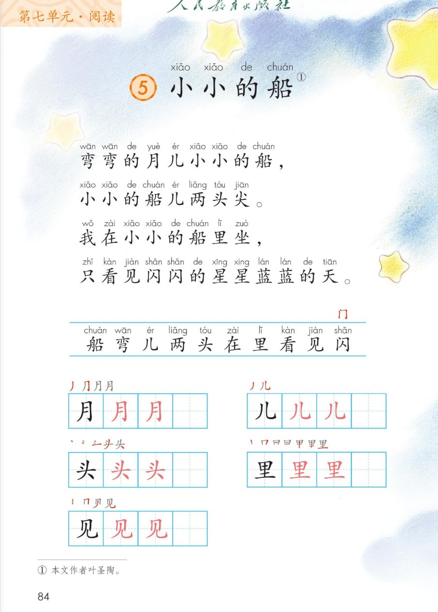
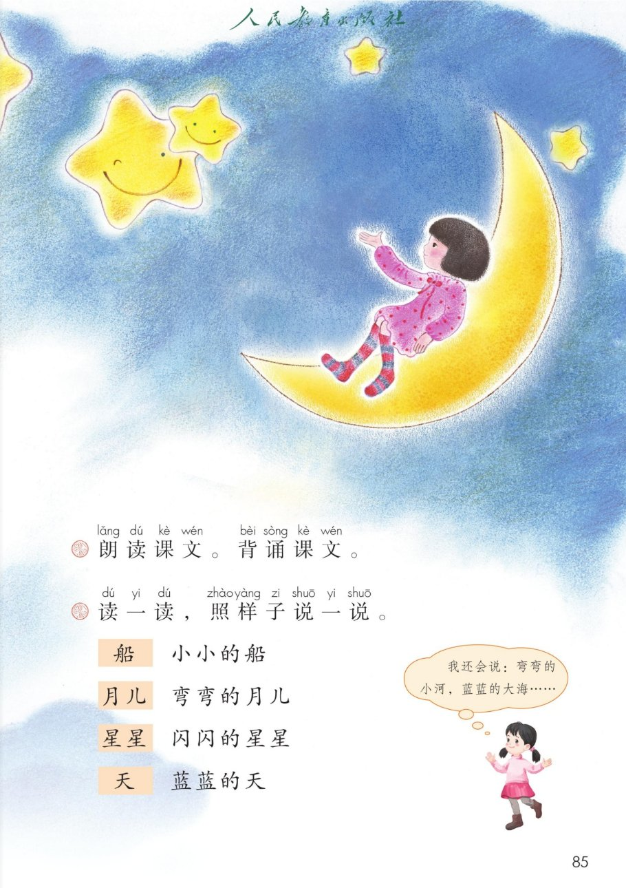

×
🔊 手机听不到声音怎么办？
① 先把手机
媒体音量调大 ，确认没开静音、没连蓝牙耳机；在微信里打开的，点右上角「⋯ → 用浏览器打开」。
② 还是没声音？到应用商店免费下载
Microsoft Edge 浏览器 （它自带朗读发声），用它打开本页面就能出声。
③ 换了 Edge 仍然没声音，说明这部手机的
硬件/系统不支持 网页朗读（多为老旧机型）；近几年买的新手机一般都能正常播放。
→ 打开声音自检
统编版 · 一年级上册 · 第七单元 · 阅读 · 课文5
⑤ 小小的船
弯弯的月儿小小的船，小小的船儿两头尖。
朗读背诵 弯弯小小闪闪蓝蓝 照样子说一说 闯关 8 题
这一课学什么： 把这首小诗读得轻轻的、美美的，再背下来；认识 10 个字，写好「月、儿、头、里、见」；
学学「弯弯的、小小的、闪闪的、蓝蓝的 」，照样子也说几个。🌙⭐
页面上每行的拼音是照课本标的，供参考，以课本和老师为准。
课本第 84 页 点一行读一行
读前小贴士： 诗人把弯弯的月儿 想成了小小的船 ，还坐上去看星星呢。
读得轻一点、慢一点，像坐在月亮船上晃呀晃。🌙
🎵 全文连读
🔁 跟读模式（读完一行停一停）
🎯 背诵三步： ① 一句一句跟读 → ② 看提示接下半句（弯弯…／小小…／我在…／只看…）→ ③ 闭眼想着月亮船，整首背出来。
课本第 84 页识字条 点一张读一张
识字条 · 连起来读
船 弯 儿 两 头 在 里 看 见 闪 —— 识字条右上角红字是新偏旁「门 」
偏旁小发现： 门 门字框 → 闪 （门里藏着一个「人」，一闪就不见了）。
同门的字还有：问、间、闷 。🚪
课本第 84 页田字格 先看笔顺，再动笔
写字小提醒： 「月」「里」都要先外后里再封口 ；「儿」「见」都有竖弯钩 ，弯要圆，最后轻轻往上一挑。✍️
课文第 1、2 行 点卡听读
想象小问答： 月儿真的能坐人吗？不能 ，这是诗人美好的想象 ——
把月亮当成小船，自己坐上去，就看见了闪闪的星星蓝蓝的天。读诗时，脑子里也在画画呢。✨
课本第 85 页 点卡听读
点卡听读
我还会说： 弯弯的小河、蓝蓝的大海、闪闪的灯光、小小的蚂蚁、圆圆的荷叶……
先说一个「怎样的 」，再说一样东西。🗣️
点题目可以听题，点选项就判对错，答完自动算分
已经答 0 题，答对 0 题。
点图放大

第 84 页 · 课文 · 识字条 · 田字格 · 脚注

第 85 页 · 插图 · 课后题「照样子说一说」